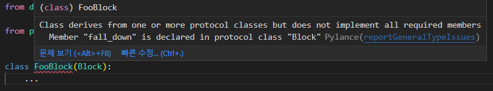

Block
Block은 도미노에 배치되는 하나의 블럭에 비유됩니다.
정의
pydomino.Block을 상속하고, 동기 또는 비동기 fall_down 메서드를 작성한 모든 객체를 Block으로 활용할 수 있습니다.
type hint를 통해 Block을 상속한 객체에 fall_down이 정의되어 있지 않음을 알려줍니다.

Block을 정의하는 권장되는 방법은 python의 dataclasses를 활용하는 방식입니다.
from uuid import UUID
from pydomino import Block
from dataclasses import dataclass, field
@dataclass(kw_only=True, slots=True, frozen=True) # 1
class FooBlock(Block):
some: bool
required: int
data: str = field(default_factory=lambda : "")
def fall_down(self):
# need work...
...
- 해당 객체는 인자를 모두 keyword 인자로 요구하며, slots가 지정되어 some, required, data가 아닌 다른 속성은 보유할 수 없고, frozen하여 객체 생성 후 속성을 변경할 수 없습니다.
Fall Down
fall_down 메서드는
- 동기 또는 비동기로 작성될 수 있습니다.
- 의존하는 인자를 위치 또는 키워드 인자로 정의할 수 있습니다.
- pydomino.touch 함수를 활용해 다음 번 쓰러질 Block을 예약할 수 있습니다.
예제 코드는 다음과 같습니다.
from typing import Protocol
from pydomino import Block, touch
class IPrinter(Protocol):
def print(self, __text: str):
...
class FirstBlock(Block):
data: str
def fall_down(self, printer: IPrinter): # 1
printer.print(self.data)
touch(SecondBlock(data=self.data)) # 2
class SecondBlock(Block):
data: str
async def fall_down(self): # 3
...